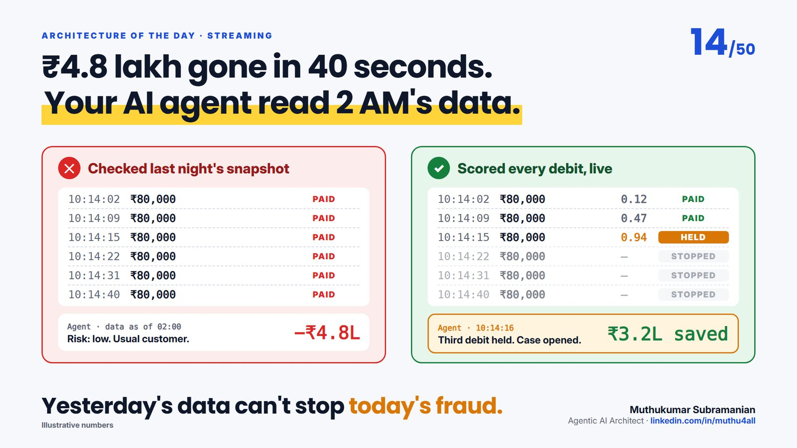

Fraud Takes 3 Seconds. Your AI Agent Is Reading Yesterday's Data.
By Muthukumar Subramanian · Agentic AI Architect

10:14 on a Tuesday morning. A retired schoolteacher in Madurai gets a call from "the bank". A new payee is added to her account, a new phone logs in, and six UPI debits of ₹80,000 each go out in 40 seconds.
The bank has a shiny new AI agent watching for fraud. It checked every one of those debits. Each time it said: low risk, usual customer.
It was right, according to its data. Its data was from 2 AM.
₹4.8 lakh, gone before anyone looked up. (The customer, the bank and the numbers are illustrative. The pattern is one every fraud team in India knows.)
Fraud moves in seconds. Most AI agents still think in nights.
The architecture today
Day 13 was about the nightly pipeline. Streaming is its opposite. Instead of collecting data and loading it at 2 AM, every event (a debit, a login, a new payee, a device change) is published the moment it happens to an event stream like Apache Kafka. Any system that cares can read it straight away.
A stream processor such as Apache Flink sits on that stream and keeps a running picture: how many debits from this account in the last minute, is this payee new, has this device ever been seen before.
Banks and payment companies already run this way for rules: "block if more than five debits a minute". And the volume makes it necessary. NPCI's data shows UPI handled about 25.5 billion transactions in October 2026 alone. Nobody reviews that by hand, and nobody should review it from last night's copy.
👉 [IMAGE: A-day14-2-in-article-architecture.png]
Caption: Three clocks. A fast model scores every event in milliseconds, plain-code limits decide, and the AI agent works the case in minutes. Grey is what you already have. Amber is new.
Where AI plugs in now: three clocks, not one
Here's the mistake I see in agent demos: someone wires a large language model into the payment path and asks it, "Is this fraud?" for every transaction. It's too slow, too costly, and it doesn't give the same answer twice.
Split the work by speed instead:
→ Milliseconds: a fast ML model on the stream. Flink computes live features (six debits in 40 seconds, new payee, new device) and a classic model scores each event. It flags. It doesn't decide.
→ Under a second: limits in plain code. Allow, ask for step-up authentication, or hold. Written down, tested, owned by risk.
→ Minutes: the AI agent. Now the LLM earns its place. It reads the whole trail, checks for mule-account signals, looks at the payee's history, drafts the case note, and calls or messages the customer. An analyst makes the final call.
In our story, the third debit scores 0.94. It's held. The agent opens a case at 10:14:16, and the last three debits never happen. ₹1.6 lakh is still lost. ₹3.2 lakh isn't.
The model is fast. The agent is thoughtful. The limits are written down.
👉 [IMAGE: A-day14-3-in-article-who-acts-when.png]
Caption: Who acts, at what speed, and with what limit. Screenshot it for your next fraud design review. Limits are illustrative.
Where it's heading with agents
The streaming vendors have seen this coming. Confluent, now part of IBM, has moved from running model inference inside Flink to "streaming agents" that run continuously on live events and can call tools. Expect the same from every cloud.
In two or three years, I expect fraud teams to work alongside a pack of agents: one tracing where the money went, one checking whether the payee is a mule account, one talking to the customer in their own language. India is already moving on the mule side. The RBI Innovation Hub built MuleHunter.AI to spot mule accounts, and reports from May 2026 say more than two dozen banks use it.
The hard question won't be the model. It'll be who's allowed to hold a customer's money, for how long, and on whose say-so.
Watch it work
Same six debits, same 40 seconds. One agent reads the 2 AM snapshot. The other reads the stream.
👉 [GIF: A-day14-4-in-article-two-lanes.gif]
Caption: The batch lane notices the next morning. The stream lane holds the third debit and opens a case. All figures illustrative.
Pros
→ Decisions happen while the money is still in the bank, not in tomorrow's report
→ The LLM handles what it's good at, reading a messy case and explaining it, without slowing every payment
→ The same stream feeds fraud, pricing, logistics alerts and the nightly warehouse, so you build it once
Cons
→ Streaming is harder to run than a nightly job. Late events, duplicates and replays need real engineering
→ False holds annoy honest customers, and a held salary transfer at month-end is its own crisis
→ Fraudsters adapt. A model that's great this month needs retraining next month
The hard part
It's the limits, and who owns them. How long can you hold a pensioner's money without asking her? Can the agent release a hold on its own, and up to what amount? Who gets the call at 10:15 on a Tuesday?
Those rules belong to an owner, not a model. An AgentOps engineer, the person who runs agents in production the way an SRE runs services, owns the hold and release limits and tests them like code. A forward deployed engineer (FDE), an engineer who works inside the customer's team, sits with the fraud operations desk and learns which alerts analysts actually trust. These titles are still settling. The 10:15 phone call isn't.
The opportunity
Every bank, NBFC, payment app and lender runs fraud rules today. Very few have joined the three clocks: live features, a fast model, and an agent that works the case. Smaller banks, co-operative banks and fintechs can't build it alone.
That's the market: real-time AI for payments, lending and logistics. A packaged "fraud desk in a box" for mid-size lenders. Feature pipelines on Flink as a service. Case-investigation agents that sit beside an analyst and cut each case from 20 minutes to 5. The same pattern sells outside fraud too: dynamic pricing, delivery exceptions, collections.
Tools to try
Apache Kafka or Confluent for the event stream · Apache Flink for live features · AWS Kinesis, Google Pub/Sub with Dataflow, or Azure Event Hubs if you're on one cloud · a fast classic model for scoring, such as gradient-boosted trees · any LLM for case investigation: Claude, GPT, Gemini or an open model on Bedrock.
Your turn 👇
Should an AI agent be allowed to hold a customer's money on its own: yes or no? One word.
Tag the person in your bank whose phone rings when a fraud alert fires at 10:15.
Day 14 of 50 · follow along. Tomorrow: Day 15 · Your AI Agent Found the Wrong Contract. It Looked Similar Enough.